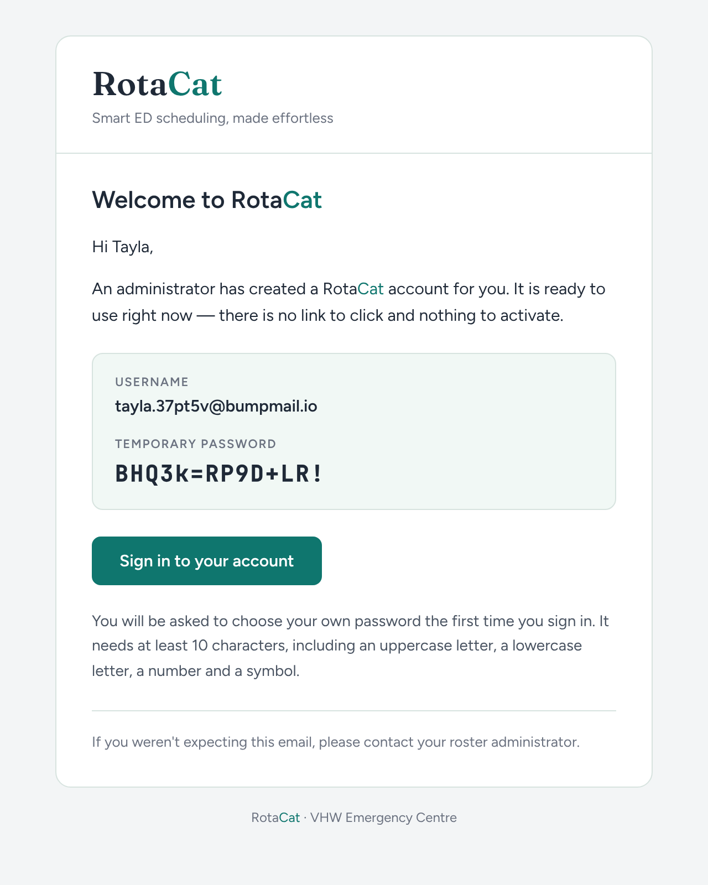
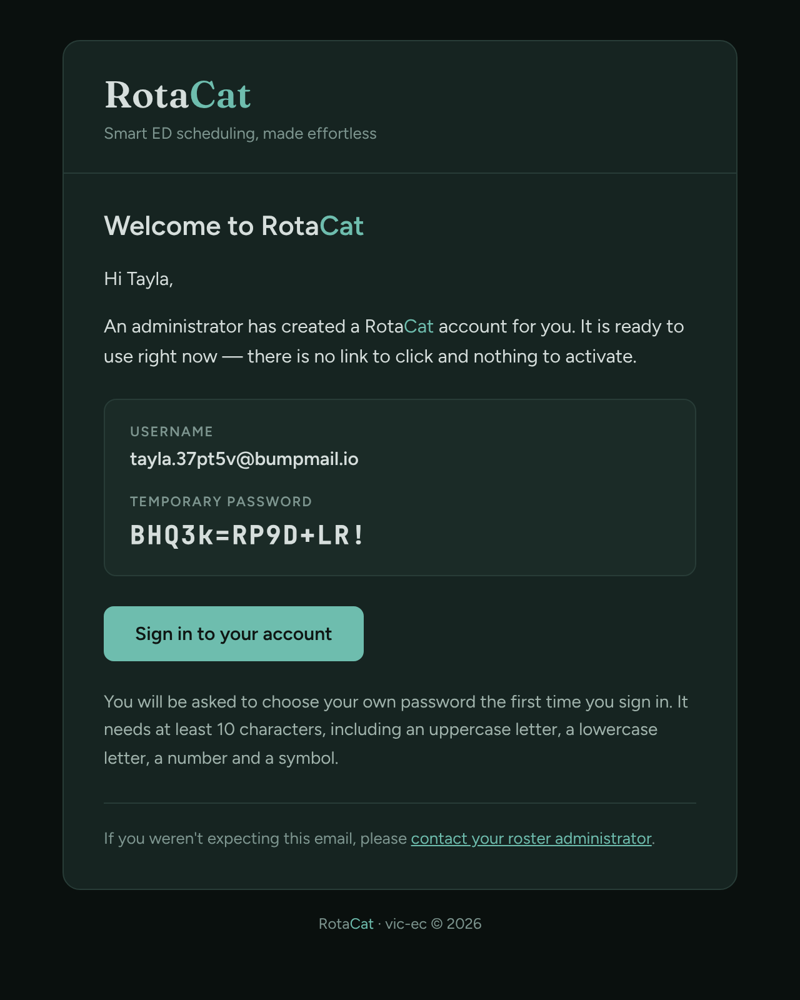
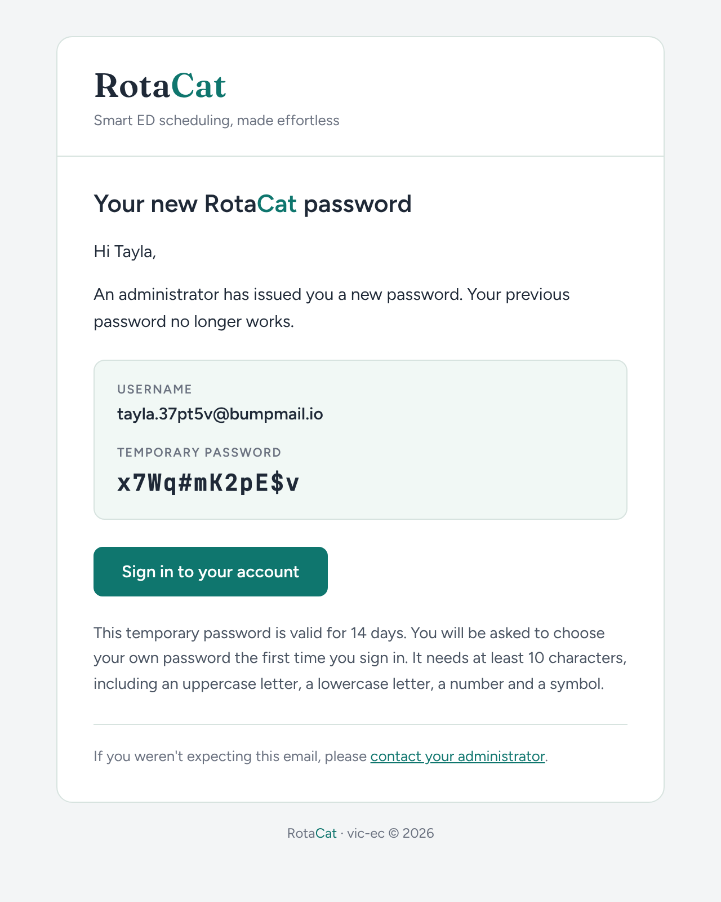
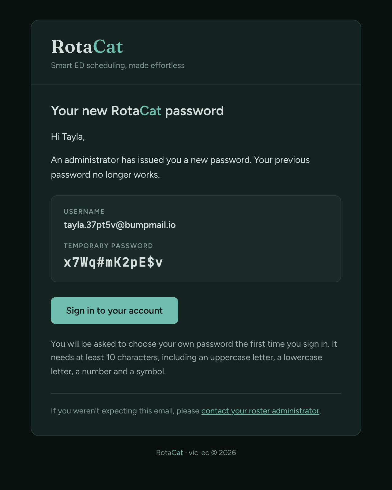
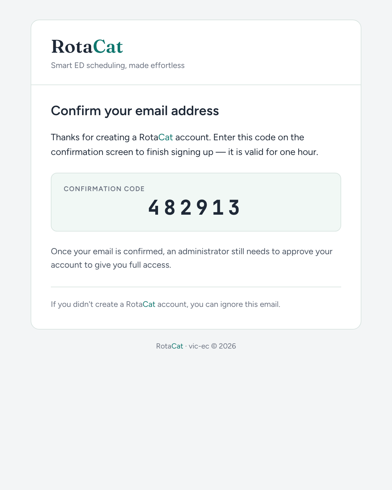
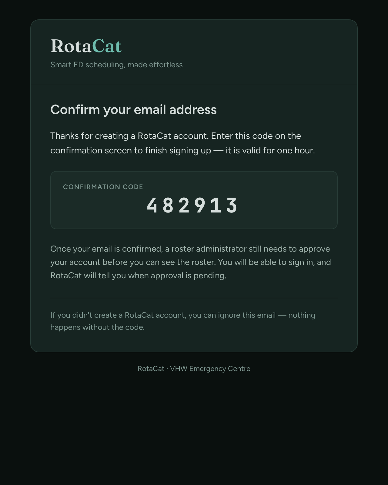
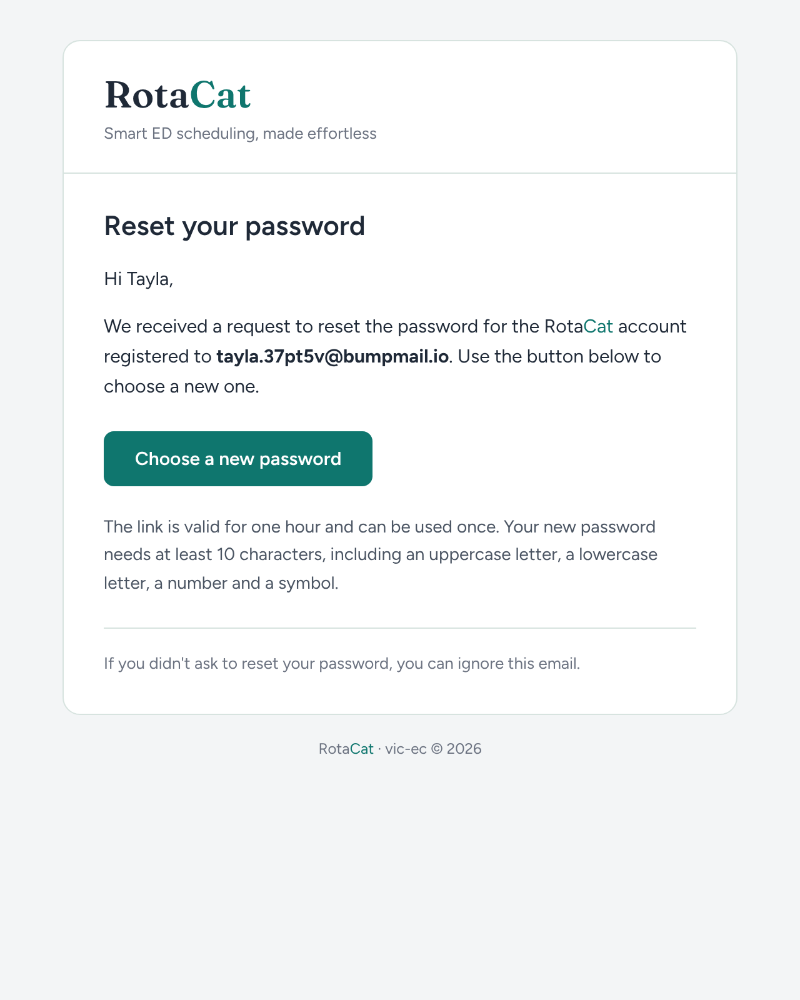
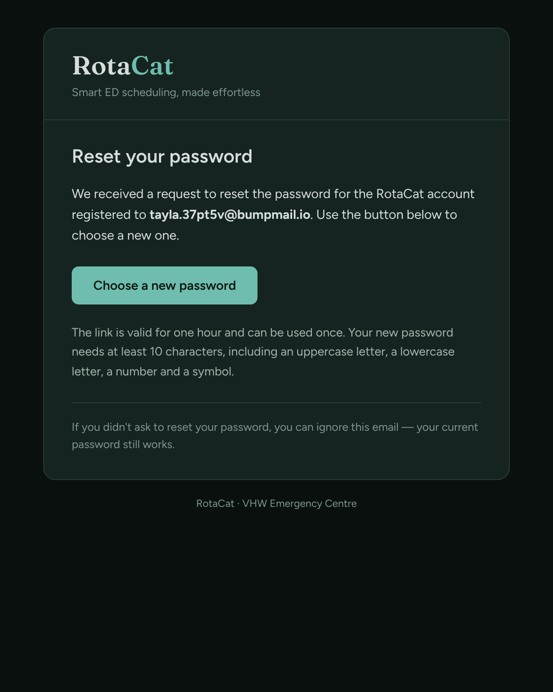
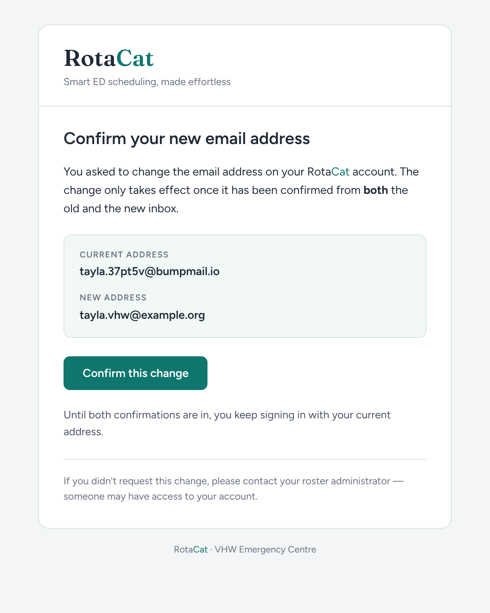
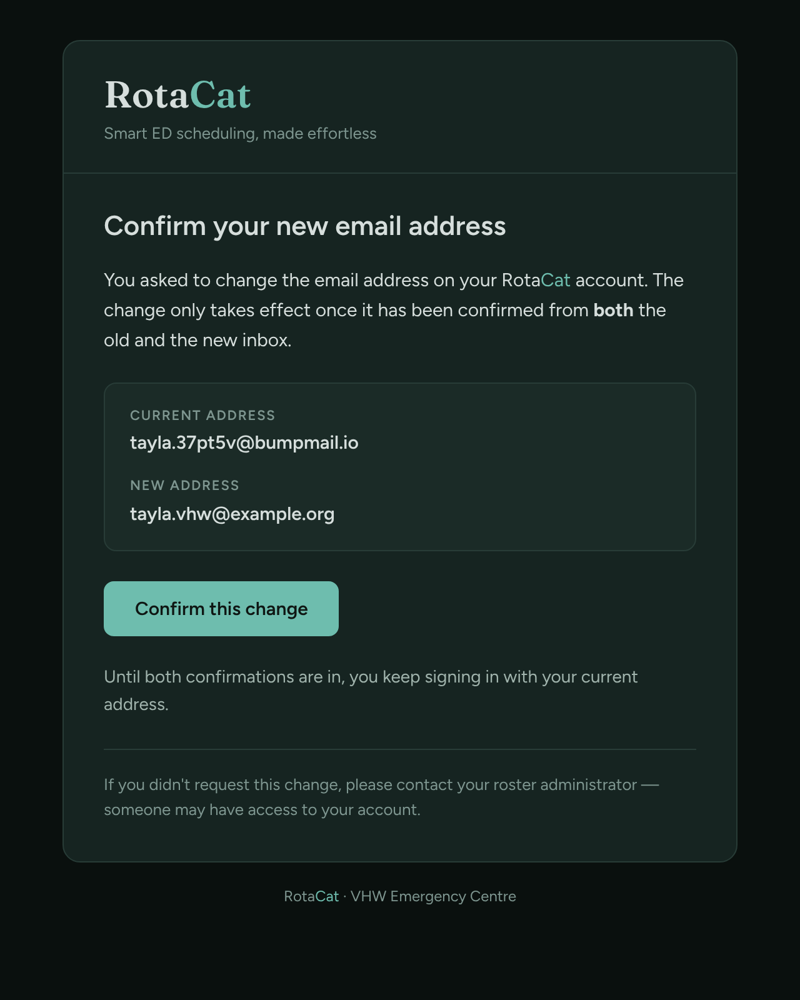

<title>RotaCat Email Mockups</title>
<meta name="claude:viewport-fit-sides" content="cover">
<style>
  /* Layout: one column of email pairs, light beside dark, on the app's own grey/ink grounds. */
  :root {
    --bg: #F3F5F6; --card: #FFFFFF; --line: #D7E3DF; --ink: #1F2937; --ink-light: #4B5563; --ink-muted: #6B7280; --accent: #0F766E;
    --font-sans: Figtree, -apple-system, 'Segoe UI', Roboto, Helvetica, Arial, sans-serif;
    --font-serif: Fraunces, Georgia, serif;
  }
  @media (prefers-color-scheme: dark) { :root:not([data-theme="light"]) {
    --bg: #0A100E; --card: #162421; --line: #283C37; --ink: #D6DEDC; --ink-light: #A0B3AC; --ink-muted: #7E9690; --accent: #6EBDAE; color-scheme: dark } }
  :root[data-theme="dark"] {
    --bg: #0A100E; --card: #162421; --line: #283C37; --ink: #D6DEDC; --ink-light: #A0B3AC; --ink-muted: #7E9690; --accent: #6EBDAE; color-scheme: dark }
  body { background: var(--bg); color: var(--ink); font-family: var(--font-sans); margin: 0;
    padding-block: 32px 48px; padding-left: max(16px, env(safe-area-inset-left, 0px)); padding-right: max(16px, env(safe-area-inset-right, 0px)); }
  main { max-width: 1180px; margin: 0 auto; display: grid; gap: 40px; }
  header h1 { font-family: var(--font-serif); font-weight: 600; font-size: 34px; margin: 0 0 6px; text-wrap: balance; }
  header h1 span { color: var(--accent); }
  header p { margin: 0; color: var(--ink-light); max-width: 65ch; line-height: 1.55; }
  .meta { display: flex; flex-wrap: wrap; gap: 8px 20px; margin-top: 14px; font-size: 13px; color: var(--ink-muted); }
  .meta b { color: var(--ink); font-weight: 600; }
  .swatches { display: flex; flex-wrap: wrap; gap: 10px; margin-top: 10px; }
  .swatch { display: inline-flex; align-items: center; gap: 6px; font-size: 12px; color: var(--ink-light); font-variant-numeric: tabular-nums; }
  .swatch i { width: 14px; height: 14px; border-radius: 4px; border: 1px solid var(--line); display: inline-block; }
  section { display: grid; gap: 12px; }
  section h2 { font-size: 17px; font-weight: 600; margin: 0; }
  section h2 small { font-weight: 400; color: var(--ink-muted); font-size: 13px; margin-left: 10px; }
  .pair { display: grid; grid-template-columns: repeat(auto-fit, minmax(300px, 1fr)); gap: 16px; }
  figure { margin: 0; min-width: 0; border: 1px solid var(--line); border-radius: 12px; overflow: hidden; background: var(--card); }
  figure img { display: block; width: 100%; max-width: 100%; height: auto; }
  figcaption { font-size: 11px; font-weight: 600; letter-spacing: 0.06em; text-transform: uppercase; color: var(--ink-muted); padding: 8px 12px; border-bottom: 1px solid var(--line); }
  .notes { border-top: 1px solid var(--line); padding-top: 20px; font-size: 14px; line-height: 1.6; color: var(--ink-light); max-width: 70ch; }
  .notes h2 { color: var(--ink); font-size: 15px; margin: 0 0 8px; }
  .notes ul { margin: 0; padding-left: 18px; }
</style>
<link rel="stylesheet" href="https://fonts.googleapis.com/css2?family=Figtree:wght@400;600&family=Fraunces:opsz,wght@9..144,600&display=swap">
<main>
  <header>
    <h1>Rota<span>Cat</span> email mockups</h1>
    <p>Every email a RotaCat user can receive, rendered from the real templates with sample data. Left is how a phone or mail app in light mode shows it, right is dark mode where the mail client honours it.</p>
    <div class="meta"><span><b>Wordmark</b> Rota in ink, Cat in teal, Fraunces semibold</span><span><b>Body</b> Figtree, with the system sans as fallback</span></div>
    <div class="swatches">
      <span class="swatch"><i style="background:#F3F5F6"></i>day ground #F3F5F6</span>
      <span class="swatch"><i style="background:#1F2937"></i>day ink #1F2937</span>
      <span class="swatch"><i style="background:#0F766E"></i>day teal #0F766E</span>
      <span class="swatch"><i style="background:#0A100E"></i>night ground #0A100E</span>
      <span class="swatch"><i style="background:#D6DEDC"></i>night ink #D6DEDC</span>
      <span class="swatch"><i style="background:#6EBDAE"></i>night teal #6EBDAE</span>
    </div>
  </header>

  <section>
    <h2>1. Welcome, account created by an admin <small>Staff list → Add staff</small></h2>
    <div class="pair">
      <figure><figcaption>Light</figcaption></figure>
      <figure><figcaption>Dark</figcaption></figure>
    </div>
  </section>

  <section>
    <h2>2. New password issued by an admin <small>Staff list → Regenerate password</small></h2>
    <div class="pair">
      <figure><figcaption>Light</figcaption></figure>
      <figure><figcaption>Dark</figcaption></figure>
    </div>
  </section>

  <section>
    <h2>3. Confirmation code, self sign-up <small>Create account → 6-digit code</small></h2>
    <div class="pair">
      <figure><figcaption>Light</figcaption></figure>
      <figure><figcaption>Dark</figcaption></figure>
    </div>
  </section>

  <section>
    <h2>4. Reset password <small>Login → Forgot password</small></h2>
    <div class="pair">
      <figure><figcaption>Light</figcaption></figure>
      <figure><figcaption>Dark</figcaption></figure>
    </div>
  </section>

  <section>
    <h2>5. Confirm new email address <small>Account settings → Change email</small></h2>
    <div class="pair">
      <figure><figcaption>Light</figcaption></figure>
      <figure><figcaption>Dark</figcaption></figure>
    </div>
  </section>

  <div class="notes">
    <h2>Where dark mode applies</h2>
    <ul>
      <li>Apple Mail, iOS Mail, Outlook (Mac, iOS, Android, Outlook.com), Samsung Mail and Thunderbird follow the email's own dark palette, as shown on the right.</li>
      <li>Gmail ignores author dark-mode styles and applies its own inversion to the light version. The light palette is the one it starts from.</li>
      <li>Every mention of RotaCat in the text, not only the header, is set with Rota in ink and Cat in teal (mint in dark mode). The one exception is the teal button, where the label stays white so it can be read.</li>
      <li>Emails 1 and 2 are sent by the Supabase Edge Function in the repo. Emails 3 to 5 are sent by Supabase Auth and must be pasted into the dashboard once.</li>
    </ul>
  </div>
</main>
